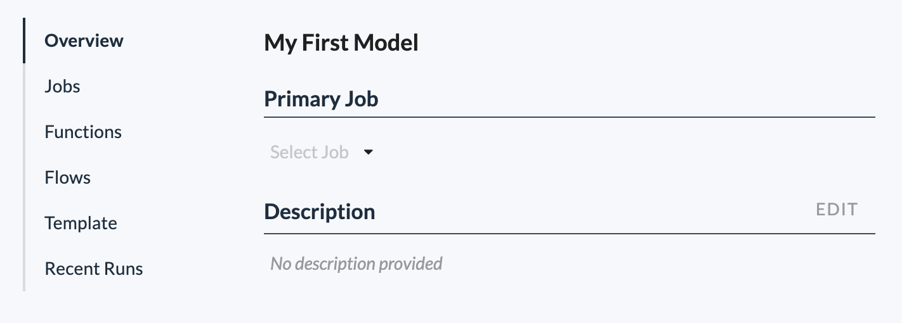

Overview
The Overview section of a model allows you to configure several common attributes of the model.
- The Name and Description of the model. Use name and description fields to document your models.
- The Primary Job of the model. This is the job that will run when electing to run a model from the model list.
See Also: About Models, Configure a Model, About Jobs